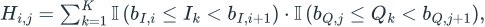
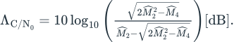

整体概括
在链路完全丢失前，从仍收到的消息找异常
研究不是用断链来报警，而是让低地球轨道（LEO）铱星物联网接收机从已成功解码的消息保留同相与正交（IQ）样本。检测器把每条消息或合并后的样本块映射成一个异常分数；分数可以用于排序或触发阈值告警，但不是对干扰来源或攻击意图的判定。
对照原文证据
This paper investigates the extent to which jamming of Iridium LEO satellite-IoT links can be detected from the physical layer of correctly decoded messages.Therefore, in satellite- IoT systems, jamming detection must be timely , i.e., detect jamming while operating on messages that are still received and decoded, before losing the link.Separating a jammer from unintentional broadband interference with the same effect is beyond the scope of this work.关键证据：底噪变了，保留下来的信号质量却未必差
作者在真实接收数据的白噪声干扰条件上发现：块长为 1000 个 IQ 样本且接收机底噪至少上升 9 dB 时，三种自编码器的 AUC 落在 0.84–1.00。这个结论比较的是有效且成功解码的样本块，不是所有发射消息；AUC 表示排序能力，不等于固定阈值下的检出率。
对照原文证据
In particular, with a chunk size c=1000 , all three autoencoder-based anomaly detectors achieve an AUC between 0.84 and 1.00 whenever the noise floor increases by at least 9 dB.We further use this dataset to investigate which artifacts introduced by jamming remain observable in correctly decoded Iridium messages.First, we report the AUC ( AUC ) of the ROC ( ROC ) curve, i.e., the probability that a jammed chunk receives a larger score than an unjammed one.Research gap
地面链路和 GNSS 的观测条件不是铱星下行链路的条件
作者的动机是：弱信号和不断变化的传播让地面无线的原始 IQ 异常检测不能照搬；全球导航卫星系统（GNSS）已有的载噪密度比和信噪比告警也只是在此作为参照。本文对比的关键不是哪个神经网络最先进，而是成功解码以后还有没有可用信息。
对照原文证据
As summarized in Table I , the current literature provides limited insight into the physical-layer effects of jamming that remain observable before communication is disrupted.Note that the goal of this work is not to identify the best architecture for anomaly detection. Rather, we investigate whether correctly decoded satellite messages contain sufficient information to support timely jamming detection and, if so, which physical-layer characteristics enable such detection.先问负样本与正样本各自怎样进入日志
已解码这个筛选条件会优先保留质量尚可的突发。若只对这些样本估计信噪比，观测到的两类分布可能高度重合；比较同一个信噪比分箱内的抢救性告警能力，比只比较两类总体信噪比更能检验“模型只是读出了信噪比”这一替代解释。
对照原文证据
In each class, jammed chunks are compared only against unjammed chunks belonging to the same SNR interval.the substantial overlap between the jammed and unjammed SNR distributions shown earlier in Fig. 5 suggests that detecting jamming by only observing successfully decoded signals biases the observed signal-quality measurements toward values typical of regular traffic.算法主线
原图由本站加载；若未显示，可打开下方原图链接。
跟着原图读
- 先沿地面的蓝箭头看
终端从右侧 A3 进入外圈 A2；图例区分干扰可忽略、还能解码但质量退化、不能解码三类情况。
- 把 A2 和 A1 分开
本文分析还可从 A2 采集的 IQ；A1 的缺报意味着已经不能依靠成功解码报文做预警。
色块是概念示意，圆形和边界不是实测覆盖半径，也不是任何场景的传播标定。
许可：CC BY-NC-ND 4.0；本站仅作非商业转载。完整原图区域按 PDF 原样栅格化为 PNG，保留图内坐标、图例及颜色；未重绘、重标或加注。
先保证训练归一化不抹掉接收幅度
每个已解码突发保存每个正交相移键控（QPSK）符号对应的 IQ 样本，并保留接收机日志。清理异常点、筛出矩估计有效的样本块后，按场景和块长平衡正常样本的信噪比分箱。训练块均方根幅度的中位数是统一缩放量，测试沿用它，不能把每个块归一为单位功率。
对照原文证据
For each measurement session, we collect the correctly decoded Iridium messages, each stored with one IQ sample per QPSK symbol, together with the receiver log, which reports the burst SNR and the noise floor of every decoded burst.To mitigate this effect, we construct one training set per scenario and chunk size by balancing the contribution of the admissible SNR classes extracted from the unjammed data. Each class contributes to the training set the same number of chunks, equal to 80% of those available in the least populated class. The remaining unjammed chunks are reserved for testing.Finally, we normalize all IQ samples by a common constant, i.e., the median RMS ( RMS ) amplitude of the training chunks. This approach preserves information related to variations in the received power while keeping the input scale consistent across training and test data.表示方式不同，告警量都是偏离正常输入的程度
Raw AE 把相邻 IQ 窗口送进稠密自编码器，循环版 LSTM-AE 让模型感知时序；图像版 IB AE 把 IQ 平面上的样本计数当灰度图，保留点云分布。三者只从无干扰样本学习复原，推断时用重建误差，不把有干扰标签或接收机底噪增量喂给自编码器。
对照原文证据
All the AI-based detectors treat jamming as an anomaly of the received messages, but they expose it differently, i.e., through spatial structure in the IB AE [ 9 , 15 ] , through dependencies along a sequence of samples in the LSTM-AE [ 16 ] , and through neither in the plain AE , which isolates the contribution of both mechanisms.The AE reads bins as pixels of a grey-scale image, whose brightness is the bin count.For the three considered one-class autoencoder-based anomaly detectors, the score is the mean reconstruction error. For the GNSS baselines, the score is the negated value of the estimated statistic, such that larger scores consistently correspond to a higher likelihood of jamming.把两个质量指标调成相同的异常方向
对照方法分别利用 IQ 振幅的矩估计类载噪密度比，或用接收样本到拟合星座点的残差估计信噪比。分数取指标的相反数以统一“越大越异常”；跨突发合并时使用同一个增益和相位拟合，是两种基线在长块中要单独理解的限制。
对照原文证据
In this section, we present the considered jamming detection techniques. We consider three AI -based detectors used in the context of terrestrial links, i.e., the IB AE ( IB AE ), the LSTM-AE , and an AE on raw IQ samples, and two statistical baselines adopted in the GNSS domain, i.e., a moment-based C/N_{0} estimator and a symbol-directed SNR estimator.In a chunk that spans several messages, however, a single coefficient \hat{\alpha} is fitted over bursts with independent gains and phases, and the amplitude differences between bursts raise the kurtosis \hat{M}_{4}/\hat{M}_{2}^{2} , which penalizes both baselines at larger chunk sizes.For the GNSS baselines, the score is the negated value of the estimated statistic, such that larger scores consistently correspond to a higher likelihood of jamming.关键公式
公式从计数到质量估计，别把底噪放进模型输入
直方图一式统计的是符号在 IQ 平面的局部频数，保留绝对计数不等于只看消息长短。另两式属于信号质量基线：矩估计基于恒模和加性高斯白噪声，硬判决式先估复系数再求残差。底噪上升则是作者用接收机日志解释可检性的外部横轴。
对照原文证据
The counts are not divided by K , so that, per message, the image also reflects the length of the message.For a constant-modulus signal under AWGN , the signal and noise powers follow from the moments as \hat{S}=\sqrt{2\hat{M}_{2}^{2}-\hat{M}_{4}} and \hat{N}=\hat{M}_{2}-\hat{S} , yielding the closed-form M2M4 estimate of Eq. 2 :The estimator first removes the unknown channel gain and the residual phase offset due to Doppler and oscillator drift, which would otherwise corrupt the symbol decisions. Both are estimated jointly and without pilots through a single complex coefficient.Therefore, we use the receiver noise floor reported by the SDR front-end of the receiver, which increases with the received jamming power even when the successfully decoded bursts retain a high SNR.无效矩比不能被当作检测失败的负样本
矩比接近边界时，平方根或分母不稳定；作者先按矩比筛选有效块再比较分数。要检查迁移，应把筛掉的块单列，而不是拿有效样本 AUC 推断全部接收机会的可靠性。符号判决版同样需要注意，不同突发的增益和相位不共享。
对照原文证据
Moreover, the estimate is real and finite only when 1<\hat{M}_{4}/\hat{M}_{2}^{2}<2 , a condition we use in Sec. VI to define the valid chunks.In a chunk that spans several messages, however, a single coefficient \hat{\alpha} is fitted over bursts with independent gains and phases, and the amplitude differences between bursts raise the kurtosis \hat{M}_{4}/\hat{M}_{2}^{2} , which penalizes both baselines at larger chunk sizes.Chunks are considered valid only if the resulting kurtosis ratio \hat{M}_{4}/\hat{M}_{2}^{2} lies between 1 and 2, as required by the estimator.把 IQ 点云变成计数图

两个指示函数同时成立才给相应格子加一。示例：同一格内两个样本、第三个落在邻格，则该格计数为 2、邻格为 1。
符号与实现提醒
- H(i,j)
- 格内计数
- K
- 块内复样本数
- I[k]、Q[k]
- 第 k 个复样本的两分量
- b
- 各轴分箱边缘
- I(条件)
- 真假指示函数
左闭右开；原文随后做边缘置零和平滑，不能把原始直方图当已缩放后的网络输入。
用判决星座估计复增益
最小二乘更新就是接收点乘以判决点的共轭后取均值。假设每个接收点恰为相应单位星座点的两倍，所有乘积都是实数 2，均值仍是 2，即幅度系数为 2、相位为零。
符号与实现提醒
- alpha-hat(i)
- 第 i 次迭代的复系数，模与辐角分别给出增益和相位
- r[k]
- 归一化接收样本
- s-hat(i)[k]
- 本次迭代的单位能量 QPSK 判决
- K、*
- 块长、共轭
这不是最终 SNR；还需用末次判决残差估计噪声，跨突发共享一个系数可能失配。
由振幅矩估计每符号信噪比

两个振幅矩在恒模加白噪声模型下分离信号与噪声功率。例：归一化二阶矩取 2、四阶矩取 7，根号项为 1、分母为 1，得到 0 dB。
符号与实现提醒
- M-hat(2)、M-hat(4)
- 接收振幅平方和四次方的样本均值
- Λ
- 论文沿用载噪密度指标记法；此处量纲为 dB 的每符号 SNR
- 10 log10
- 把线性功率比转为 dB
矩比必须严格在 1 与 2 之间；换算为 C/N0 还要加符号速率对应常数，固定速率下排序不变。
实验怎么做
实验设计：同场景共享正常负样本，还做跨环境转移
作者报告 47 种干扰条件，覆盖高或低多径、静止或移动接收机。场景内，同场景留出的有效无干扰块作为所有条件和检测器共享的负例；跨环境试验固定源模型、尺度与阈值。块长试验同时包括按消息计分和定长 IQ 块。
对照原文证据
To this aim, we collect and publicly release a real-world dataset of Iridium messages under 47 jamming conditions, spanning two propagation environments, static and mobile receivers, and different jammer distances, powers, and signal types.Evaluation Tests. Using the data collected in Experiments 1–4 (Sec. V ), we evaluate the detectors through three complementary tests. In every condition, we treat the valid jammed chunks as positive samples and the held-out unjammed chunks of the same scenario as negative samples. The same negative set is shared across all conditions and detectors evaluated within that scenario.Test 1 (chunk size). Through this test, we investigate the trade-off between detection delay and detection performance. Using the AWGN-jamming conditions of Experiments 1, 2, and 4, we evaluate the detectors on a single decoded message and on chunks containing c=250,500,1000,2000 IQ samples. Based on these results, the following analyses focus on two representative operating points: a single message, which minimizes the detection delay, and c=1000 , which provides a favorable trade-off between delay and detection performance.Test 3 (model transferability). This test evaluates the robustness of the detectors across environments. For both static and mobile receivers, we train the detectors in one environment and test them in the other, i.e., HM-to-LM and LM-to-HM, while retaining the model parameters, normalization constant, and detection threshold of the training environment.AUC 与报警口径并用
作者用 Mann–Whitney 统计量计算 ROC 曲线下面积（AUC），并用 200 次百分位自助重采样得到 95% 置信区间。固定告警阈值取训练分数 P95；测试假阳性率（FPR）用留出正常块，真阳性率（TPR）用有干扰块。区间和 FPR 的统计单位不是独立站点。
对照原文证据
We compute the AUC through the Mann-Whitney statistic [ 43 , 44 ] and estimate a 95% confidence interval through percentile bootstrap resampling with 200 repetitions, in line with relevant literature [ 45 ] . Moreover, since a deployed jamming detector ultimately operates with a fixed threshold, we also report the TPR ( TPR ) and FPR ( FPR ) obtained by placing the threshold at the P95 ( P95 ) of the training scores. We compute the corresponding FPR on the held-out unjammed chunks.成本表不是嵌入式实测耗时
在 32 位浮点、包含输入缩放的内存口径下，Raw AE 约为 4.5 kB、LSTM-AE 为 251 kB、IB AE 为 7.0 MB；操作数是每次判决的乘加且不含激活。论文报告 MATLAB 实现与数据发布；该成本表可用于筛选部署候选，但不能当作板上延迟或能耗测量。
对照原文证据
TABLE V: Resource requirements of the autoencoders. Memory in 32-bit floating point, including the input scaling. Operations: multiply–accumulate operations per detection decision, excluding activations.Trainable Memory Operations per decision Detector parameters Per message c=1000 Raw AE 1 072 4.5 kB 26 k 127 k LSTM-AE 62 850 251 kB 25 M 123 M IB AE 1 655 824 7.0 MB 2.9 M 2.9 MWe implement all detectors in MATLAB R2024b.To this aim, we collect and publicly release a real-world dataset of Iridium messages under 47 jamming conditions, spanning two propagation environments, static and mobile receivers, and different jammer distances, powers, and signal types.提升与证据
底噪是更好的分层变量，不是统一告警阈值
对汇总的白噪声条件，在 c=1000 时，底噪上升不低于 9 dB 的 AUC 为 0.84–1.00；底噪增量不正时，自编码器没有超过 0.66。作者也在相同信噪比区间内对比两类样本以检查幸存偏差；几何距离和多径场景不能替代由接收机实际测到的底噪。
对照原文证据
To this aim, Fig. 11 aggregates all AWGN-jamming conditions from Experiments 1, 2, and 4 and reports the AUC as a function of the noise-floor increase \Delta N (Sec. V ). We notice that conditions originating from different experiments, environments, receiver mobility patterns, distances, and jammer powers follow a common trend when expressed through \Delta N . In particular, with a chunk size c=1000 , all three autoencoder-based anomaly detectors achieve an AUC between 0.84 and 1.00 whenever the noise floor increases by at least 9 dB.Conversely, when the jammer fails to raise the noise floor above the unjammed reference level ( \Delta N\leq 0 ), no autoencoder achieves an AUC above 0.66.In each class, jammed chunks are compared only against unjammed chunks belonging to the same SNR interval.排序能迁移，原阈值可能不能迁移
跨环境汇总 155 个配对测试中，Raw AE 与 LSTM-AE 的 AUC 绝对差中位数分别是 0.007、0.029。但 Raw AE 从高多径静止迁到低多径静止，在 c=1000 时 FPR 由 0.04 升至 0.61。换站时应为正常背景重新定标，而不是拿很小的 AUC 差做阈值复用的依据。
对照原文证据
Across a total of 155 paired tests, the median |\Delta\mathrm{AUC}| is only 0.007 for the Raw AE and 0.029 for the LSTM-AE, with Spearman correlations between in-domain and transfer AUC values of 1.00 and 0.97, respectively.When transferring from HM static to LM static, the FPR of the Raw AE increases from 0.04 to 0.38 per message and from 0.04 to 0.61 at c=1000 .Therefore, detector transfer appears considerably easier than threshold transfer. In practice, the trained model can often be reused across environments, whereas the operating threshold should be recalibrated using unjammed traffic collected at the deployment site.长块不是处处更好，也不是见到干扰就有固定提前量
作者用 1000 个样本作为分离效果与可用窗口数量间的折中。摘要换算为 40 ms 接收信号量、约四条成功解码消息；包之间空隙、等待有效样本及接收机计算时间不包含在这个换算里。图中的低多径静止组不支持“加长就必然更准”。
对照原文证据
With 1000-samples chunks, i.e., 40 ms of received signal at 25,000 samples per second (collected from about four correctly decoded messages),Therefore, in the following, we consider only two reference chunk sizes, i.e., a single received message, which minimizes the detection delay, and c=1000 , as a compromise between the number of test chunks and the detection accuracy.Fig. 6: Median AUC versus chunk size on AWGN jamming (Test 1), over the distances of each scenario available at all chunk sizes (number in parentheses). Grey bands: chunk sizes used in the rest of the paper.原图由本站加载；若未显示，可打开下方原图链接。
跟着原图读
- 先认横纵轴和灰带
横轴从单消息 msg 到定长 IQ 样本块，纵轴是无量纲中位 AUC；灰带标正文采用的两个粒度。面板括号是各块长都可比的距离条件数。
- 比较两类移动环境和低多径静止
移动组实心符号的自编码器曲线大多随块长抬升；低多径静止组并不如此，粉色空心 SNR 曲线反而上升。
中位数不是任一安装点或任一距离的结果；它没有包含告警阈值下的 TPR 或无消息等待时间。
许可：CC BY-NC-ND 4.0；本站仅作非商业转载。完整原图区域按 PDF 原样栅格化为 PNG，保留图内坐标、图例及颜色；未重绘、重标或加注。
原图由本站加载；若未显示，可打开下方原图链接。
跟着原图读
- 先辨轴、点和趋势线
横轴是接收机相对底噪增量（dB），纵轴为 AUC；左边按消息、右边按定长块。每个标记是一种条件，误差棒是自助法区间；平滑线不是拟合出的报警阈值。
- 看实心与空心点分离的区域
右图底噪明显上升时，自编码器实心标记通常更靠顶部；GNSS 对照的空心符号不呈相同趋势。底噪接近零或为负时，不要忽略离散点。
图只汇总论文的白噪声条件，没有证明所有干扰类型、接收机或固定阈值共享同一规律。
许可：CC BY-NC-ND 4.0；本站仅作非商业转载。完整原图区域按 PDF 原样栅格化为 PNG，保留图内坐标、图例及颜色；未重绘、重标或加注。
局限与追问
原文范围：接收端异常提示，不归因
作者没有保存未能解码突发的 IQ，也没有分离造成同样症状的非故意宽带干扰；因而以底噪和信噪比分层得到的解释只是对被成功接收的样本成立，不能把模型当成干扰源鉴别器，或者断链后仍可独立工作的探测器。
对照原文证据
Although we did not log IQ samples of undecoded bursts, this interpretation is also consistent with the results reported in Figs. 8 (c), and 11 .Separating a jammer from unintentional broadband interference with the same effect is beyond the scope of this work.本站追问：按独立采集时段评估还能不能复现告警率
按采集日、站点或卫星过境成组，重新划分训练、阈值校准和测试。除了每块的结果，还应检验整个过境是否触发误报；对有时间相关性的块使用按组置信区间，并报告被预筛排除的比例。若跨组落差明显，应缩小部署结论而不是放宽告警阈值。
连接你的研究
把模型复用与阈值复用做成独立对照
建议在已有的合法接收日志上做离线对照：冻结同一个 Raw AE，比较源站阈值、目标站正常校准阈值和仅用底噪的简基线。在互不重叠的目标站时段报告固定误报预算下的检出率、每小时误报数与首次告警墙钟时间，按环境和可用消息率分层。
将射频异常作为定位质控的输入，不是定位收益
若扩到 GNSS 完好性监测，先在历史被动记录或屏蔽台架验证可用的原始观测，再记录定位告警、参考轨迹误差与可用率；对照方案保持相同环境、定位算法与误警预算。只有实测同时改善告警提前量且不过度降低可用率，才值得进一步部署。
来源与边界
作者的 arXiv v1 许可记录为 CC BY-NC-ND 4.0。本站免费、无广告，仅作非商业转载；三幅完整图件取自固定版本 PDF，只作网页展示所需的技术性无损 PNG 转换，不重绘、剪裁图件内部或加注。保留作者、英文图注及页码，中文读图解说与原图分开；不镜像 PDF 或全文，不代表原作者认可。
对照原始英文摘要
收录历史：2026-11-07
原文许可：CC BY-NC-ND 4.0；本站仅作非商业转载。arXiv 固定版本许可记录 ↗